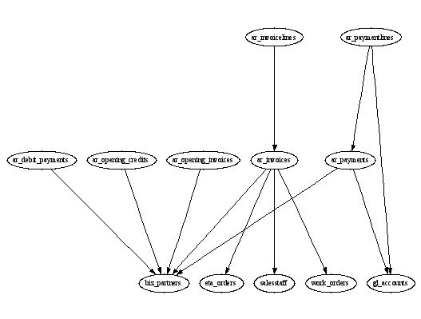

Category: Interfacing
Ingredients
Problem
You want to create a visual representation of your database schema in the form of a graph.
Recipe
Graphviz is a group of open source programs for drawing graphs. It's not intended to be an interactive program like Visio. Instead it takes a text file specification as input and produces a variety of output formats like gif, jpg, png, svg, postscript, etc.
Suneido stores the database schema in system tables, making it easy to access this information from programs. The connections between tables can be taken from the foreign key information in the indexes table. Here is some code to output the connections between a group of tables in a text file in the format required by the dot program.
File("schema.dot", "w")
{ |f|
f.Writeline('digraph schema')
f.Writeline('{')
f.Writeline('ratio=.75')
QueryApply('tables join indexes
where tablename =~ "^ar_"
and fktable isnt ""
project tablename, fktable')
{ |x|
f.Writeline(x.tablename $ ' -> ' $ x.fktable)
}
f.Writeline('}')
}
In this case I selected the tables (from our accounting application) whose names start with "ar_" (Accounts Receivable). If you don't have too many tables you could just do them all.
I used the "block" form of File to handle opening and closing the file.
The resulting file looks like:
digraph schema
{
ratio=.75
ar_debit_payments -> biz_partners
ar_invoicelines -> ar_invoices
ar_invoices -> biz_partners
ar_invoices -> eta_orders
ar_invoices -> salesstaff
ar_invoices -> work_orders
ar_opening_credits -> biz_partners
ar_opening_invoices -> biz_partners
ar_paymentlines -> ar_payments
ar_paymentlines -> gl_accounts
ar_payments -> biz_partners
ar_payments -> gl_accounts
}
From the command line, you can then use dot to convert this text file to a visual format. For example, to convert to a JPEG file:
dot -Tjpg schema.dot -o schema.jpg
(assuming dot is installed and on your path)
The result looks like:
You can automate the conversion and viewing from within Suneido with:
System("dot -Tjpg schema.dot -o schema.jpg")
System("start schema.jpg")
The "start" on the second line is optional, it ensures that Suneido doesn't wait for the viewer to end. Specifying a file name as the command will use whatever viewer is configured on your system.
See Also
Graphviz - www.graphviz.org